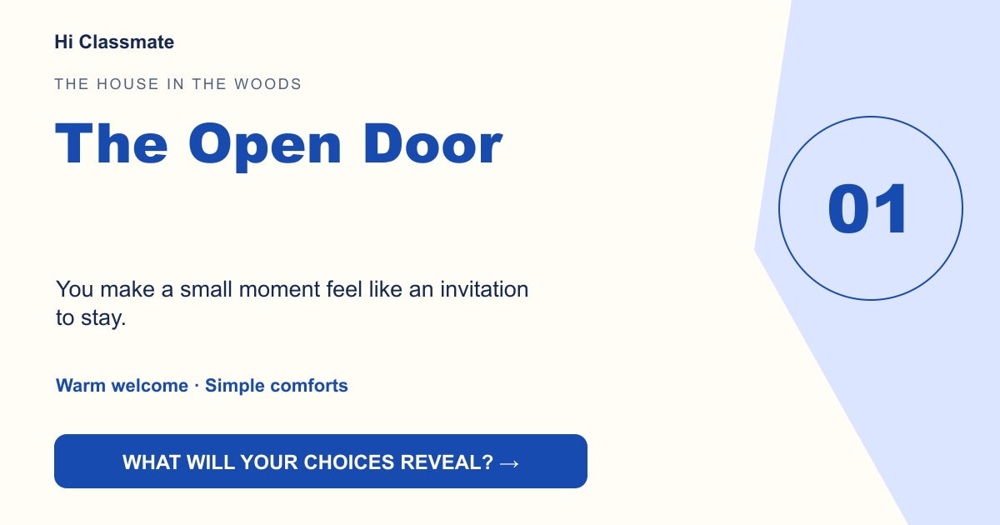

The Open Door
You make a small moment feel like an invitation to stay.

Your choices leaned toward sharing your reactions and enjoying the moment in front of you. You may connect through warmth that feels easy to join.
Step inside →You make a small moment feel like an invitation to stay.

Your choices leaned toward sharing your reactions and enjoying the moment in front of you. You may connect through warmth that feels easy to join.
Step inside →